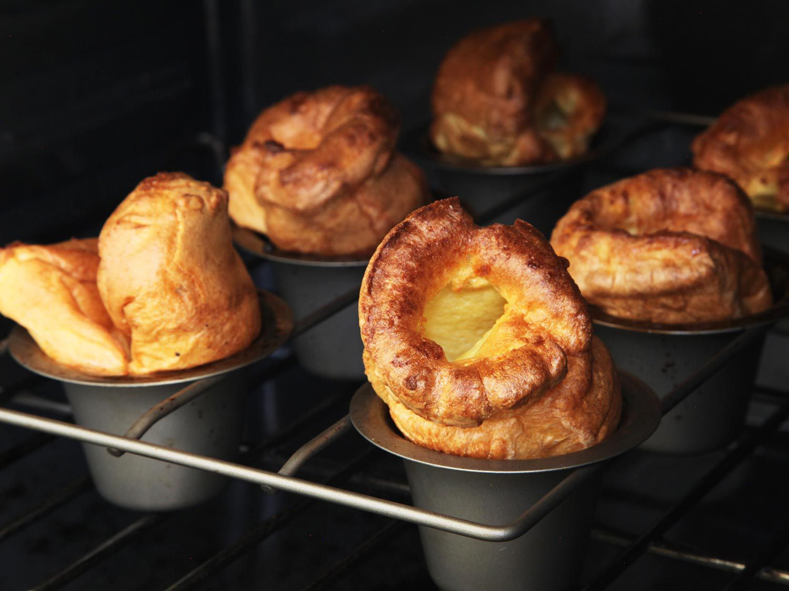

Home
Yorkshire Pudding recipe

Description
Yorkshire pudding is a must-have accompaniment with gravy when you're serving a traditional British roast beef dinner. The secret to making foolproof Yorkshire puddings is to add the batter to sizzling hot fat. That way, the Yorkshires puff up and get crispy on the outside but stay tender inside.
Ingredients
- 3 large eggs
- 1 cup milk
- 1 cup all-purpose flour
- 2 tablespoons butter
Steps
- Step 1: Gather all ingredients. Preheat the oven to 375 degrees F (190 degrees C).
- Step 2: Beat eggs and milk together in a medium bowl.
- Step 3: Stir in flour.
- Step 4: Divide butter evenly into the cups of a 12-cup muffin tin, about 1/2 teaspoon per cup.
- Step 5: Place the muffin tin in the preheated oven until butter has melted and is sizzling hot, 2 to 3 minutes. Remove from oven, and distribute batter evenly among each cup.
- Step 6: Return to the oven and bake for 5 minutes. Reduce the heat to 350 degrees F (175 degrees C) and bake until puffed and golden, without peeking, about 25 minutes more.